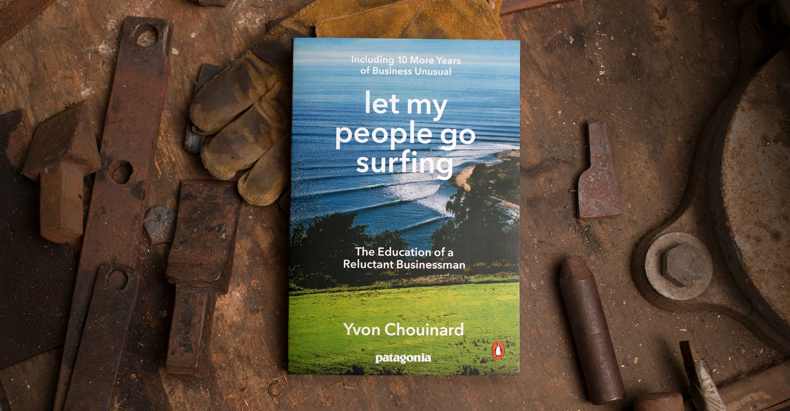

Patagonia, Inc. is a fascinating brand. Yvon Chouinard, the founder , is an eccentric.
Recently, Yvon donated the company to a non-profit trust to fight the environmental crisis1.
This level of commitment intrigued me. After listening to a couple of Yvon’s interviews2, I picked up this book with the hope of learning more about him.
Along with Yvon’s personal story, the book also expands his guiding principles on running a business. He provides a lot of examples on adopting these same philosophies in practice at Patagonia.
In a capitalist economy, companies primarily focus on profits and growth. However, Yvon is committed to using Patagonia to change the way business is done. Almost always, business owners, stakeholders treat the company as a cash printing product. According to Yvon, a company is a resource that should be used for the good - to create value rather than just a tool for minting money. This ideology is starkly in contrast with the tech industry, especially with Web3. Yvon’s depth of thoughts without any formal education in business management fascinates me.
Another idea that stood out for me was Yvon emphasis on a long term vision. He has this 100-year timeframe perspective to taking decisions. Usually, stakeholders are under pressure to create short-term gains at the expense of long-term vitality and responsibility. However, Yvon’s approach is rather unique in that he prefers slow, organic growth rather than marketing-driven hype around the brand. In addition to this, the brand builds an ecosystem with it’s dependents and dependencies to guarantee stability.
Perhaps, this approach comes from Yvon’s inherent love for the outdoors, and building tools to improve that experience. He himself admits that he is a craftsman who stumbled into business. His obsession with creating the best product edges him from the rest of the hobbyists.
He raises intriguing questions about being committed to your niche v/s going mainstream by selling out. Should a company compromise quality for scaling in the name of growth?
As expected, I’m totally sold on his philosophy about the environment. I can only hope the ideas in this book translate them to my daily activities. At least, my relationship with material goods will become a bit more deliberate. The key takeaway here for me is that giving away money for environmental initiates is not philanthrophy. It’s about paying dues for our use (aka exploitation) of our planet. So, this money should be cost of doing business or owning a product.
Business is merely a side effect of Yvon’s obsession with improving the ecosystem around the activies that interest him. This books sets few conscientiousness expectations from a business towards it’s customers, employees, and the environment. There is still a lot for me to absorb from this book, particularly about business management. However, that information might become more relevant if I ever own a business and/or manage an organization. Regardless, I intend to revisit the new edition of this book3 some time in the future.
The following passage from the book stuck with me:
I realize now that what I was trying to do was to instill in my company, at a critical time, lessons that I had already learned as an individual and as a climber, surfer, kayaker, and fly fisherman. I had always tried to live my own life fairly simply, and by 1991, knowing what I knew about the state of the environment, I had begun to eat lower on the food chain and reduce my consumption of material goods. Doing risk sports had taught me another important lesson: Never exceed your limits. You push the envelope, and you live for those moments when you’re right on the edge, but you don’t go over. You have to be true to yourself; you have to know your strengths and limitations and live within your means. The same is true for a business. The sooner a company tries to be what it is not, the sooner it tries to “have it all,” the sooner it will die.